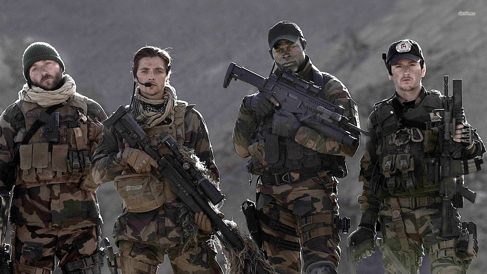
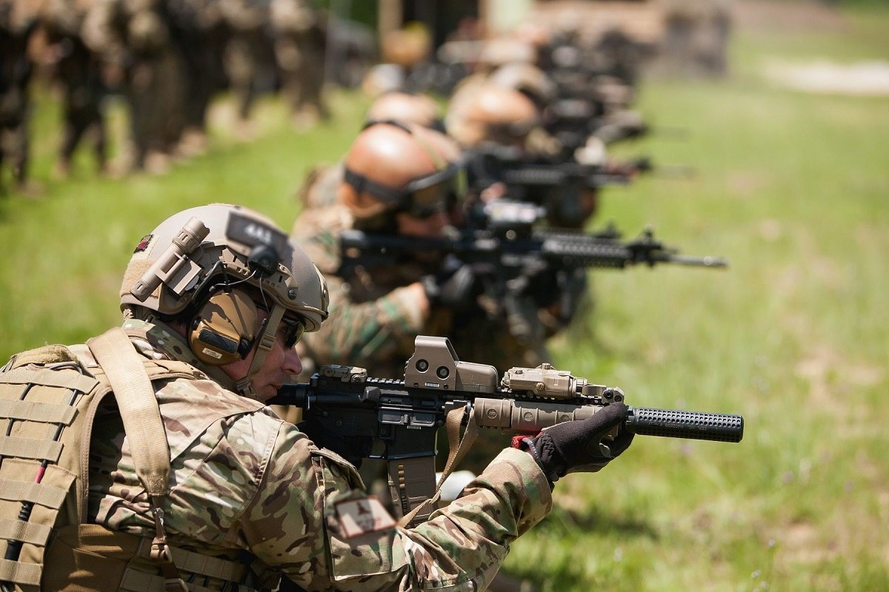

Definition
{kind=link}
special operations military activities conducted by specially designated, organized, trained, and equipped forces, manned with selected personnel, using unconventional tactics, techniques, and modes of employment.
special operations military activities conducted by specially designated, organized, trained and equipped forces using operational techniques and modes of employment not standard to conventional forces. These activities are conducted across the full range of military operations independently or in coordination with operations of conventional forces to achieve political, military, psychological and economic objectives. Politico-military considerations may require clandestine, covert or discreet techniques and the acceptance of a degree of physical and political risk not associated with conventional operations.
special-operations forces strategic formations and units of the armed forces, whose role is to conduct sabotage, reconnaissance, subversive and other special operations on the territory of foreign countries. In wartime they may also be assigned tasks such as intelligence-gathering, the seizure or destruction of key installations, the conduct of psychological operations or the organization of insurgencies in the enemy's rear area. The Armed Forces of the Russian Federation have separate special-operations forces brigades, battalions and companies which are integrated with the intelligence assets of military districts, fronts, fleets, armies or corps.
{kind=link}
The United States definition of special operations is:
special operations operations requiring unique modes of employment, tactical techniques, equipment and training often conducted in hostile, denied, or politically sensitive environments and characterized by one or more of the following: time sensitive, clandestine, low visibility, conducted with and/or through indigenous forces, requiring regional expertise, and/or a high degree of risk.
The Canadian definition of special operations forces is:
special operation forces organizations containing specially trained personnel that are organized, equipped and trained to conduct high-risk, high value, special operations to achieve military, political, economic, or international objectives by using special and unique operational methodologies in hostile, denied, or politically sensitive area to achieve desired tactical operational, and/or strategic effects in times of peace, conflict, or war.